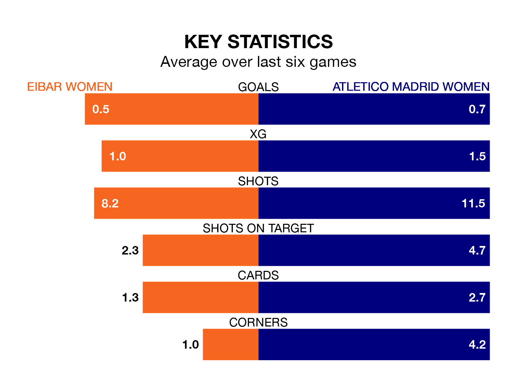

Atletico Madrid Women are strong favourites to take all three points despite Eibar Women's home advantage in Sunday's early match at Instalaciones de Unbe.
*Betting Company* are offering odds of 1.31 on Atletico Madrid sealing the win, with the visitors sitting fifth in Liga F table.
Eibar, who are 13th in the league and 20 points behind Atletico Madrid, are priced at 8.05 to win. A draw is set at 4.95.
With 13 goals in 20 games so far this season, Eibar are the league's second-lowest scorers with 0.7 goals per game. And they are conceding more than average, letting in 37 goals at a rate of 1.9 per game.
Atletico Madrid, meanwhile, are above average scorers, with 1.8 goals per game, compared to a league average of 1.5. They have conceded 0.8 goals per game.
In Sheila Guijarro Gómez, the away team have one of the league's most on-form strikers so far this season. She has notched 12 goals in 19 appearances, to sit fourth in the scoring charts.
Her goal rate of one every 128 minutes is quicker than that of Andrea Abigail Alvarez Donis, the hosts' top scorer with a goal every 230 minutes, and a total of four goals in 18 games.
Eibar are in disappointing form in Liga F, with one win and two draws from their last six games.
With two wins and two draws over that period, Atletico Madrid's form is better – they have taken eight points from 18, compared to Eibar's five.
In the last five years, Eibar and Atletico Madrid have played each other on five occasions. Atletico Madrid won all of them.
On average, Eibar scored 0.4 goals and Atletico Madrid 2.4 in those matches.
Their last meeting was on November 11, when Atletico Madrid won 3-0 at home.
Eibar's last match was on March 16, a 1-0 loss against Real Madrid Women.
Atletico Madrid beat Granada Women 1-0 last time out, on March 17, with Leicy Maria Santos Herrera on the scoresheet.
Updated: 10:19 (UTC), 22/03/24